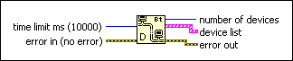

Bluetooth Discover Function
Owning Palette: Bluetooth VIs and Functions
Requires: Base Development System (Windows)
Searches for all locally installed or other Bluetooth devices within the range of the Bluetooth network.

 Add to the block diagram Add to the block diagram |
 Find on the palette Find on the palette |